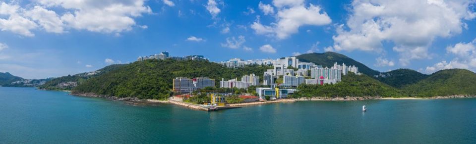
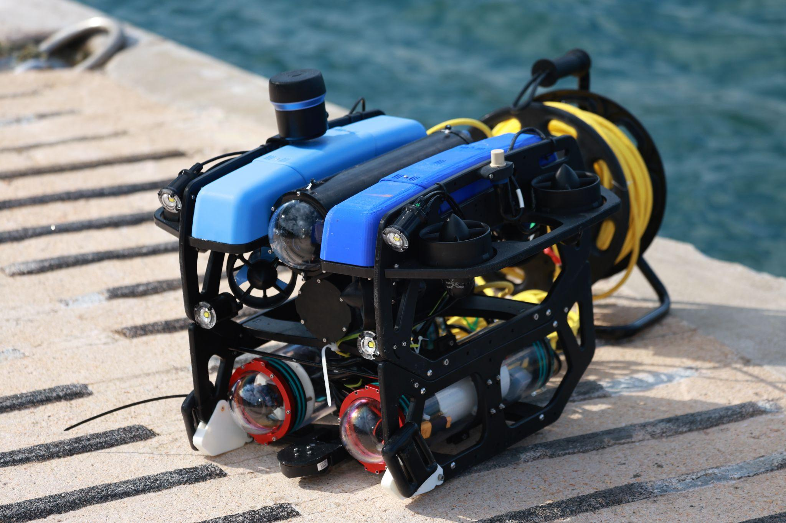
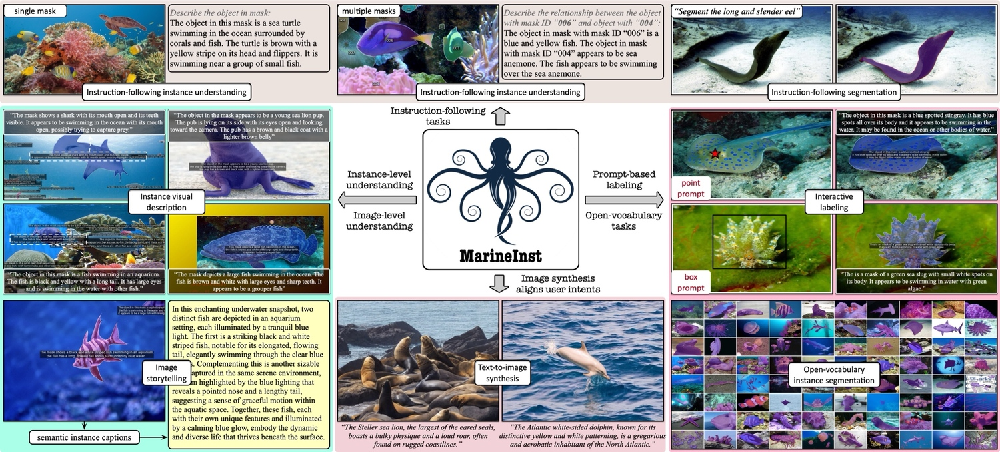
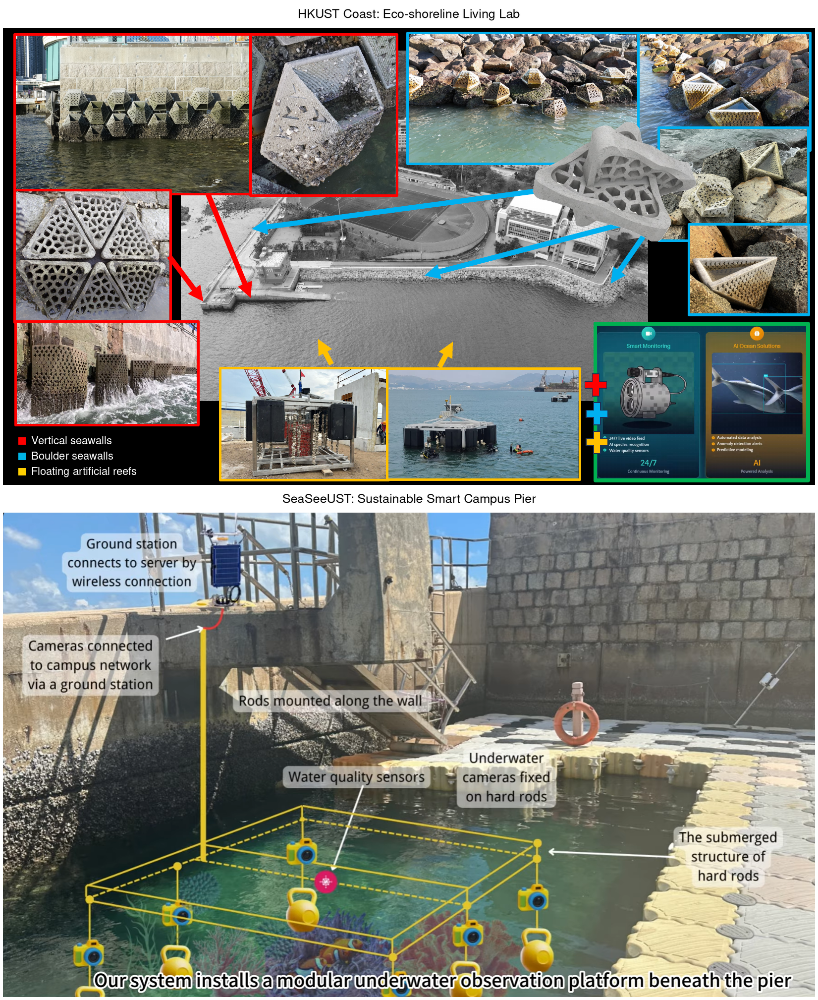

HKUST · MARINE INTELLIGENCE
An ocean of
possibilities.
We bring AI, robotics and marine science together to explore, understand and protect our living ocean.
Dive into our researchCONNECTED BY THE OCEAN
Curiosity and passion meet
real-world impact.
From the smallest marine organisms to intelligent underwater robots, we connect discovery with action for a healthier ocean.
Get to know CMIFOUR CONNECTED RESEARCH PROGRAMS
New ideas.
Deeper understanding.

Marine AI & Ocean Understanding
See the ocean in new ways.
Explore this program
Marine Embodied Intelligence & Systems
Take intelligent exploration into the water.
Explore this program
Marine Ecosystem & Biodiversity Intelligence
Make marine life easier to see, count and compare.
Explore this program
Marine Conservation, Restoration & NbS
Help coastal habitats thrive again.
Explore this programOPEN TOOLS & DATA
Built here.
Free for everyone.

CoralSCOP-LAT
Upload reef photos to segment, label and measure every coral, right in your browser.
Open the app
BenthicComplexVision
Measure reef structural complexity from a single top-down photo, in seconds.
Open the app
Datasets & benchmarks
Coral segmentation, marine species and underwater video, from CVPR, ECCV and WACV papers.
Browse datasetsOUR PEOPLE